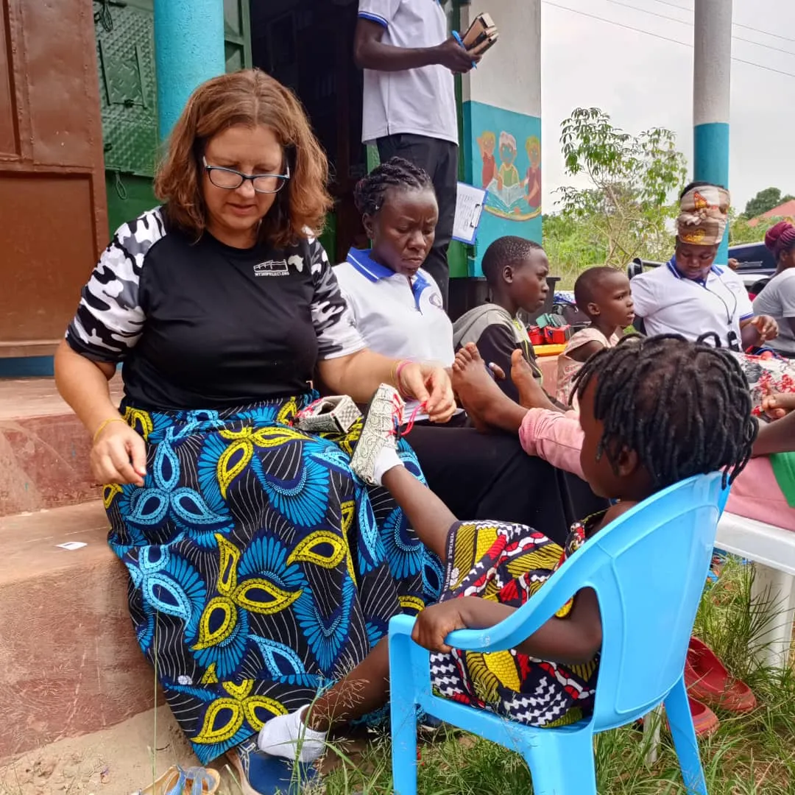
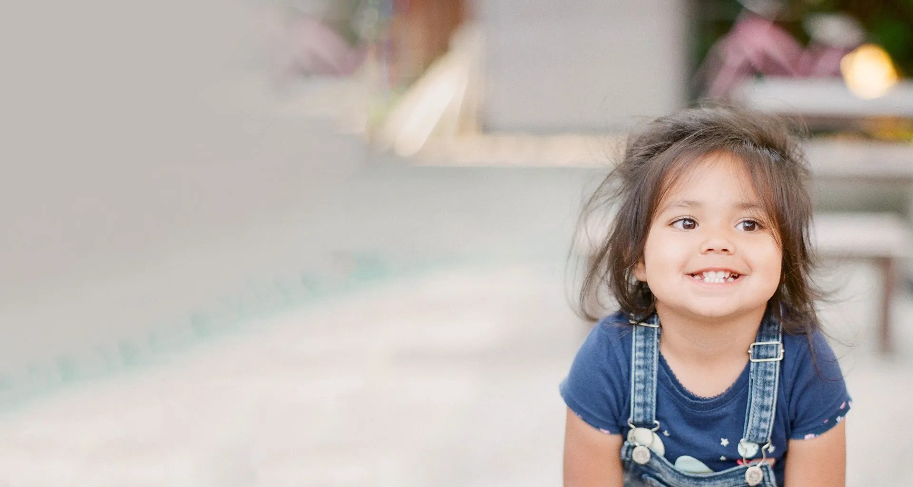
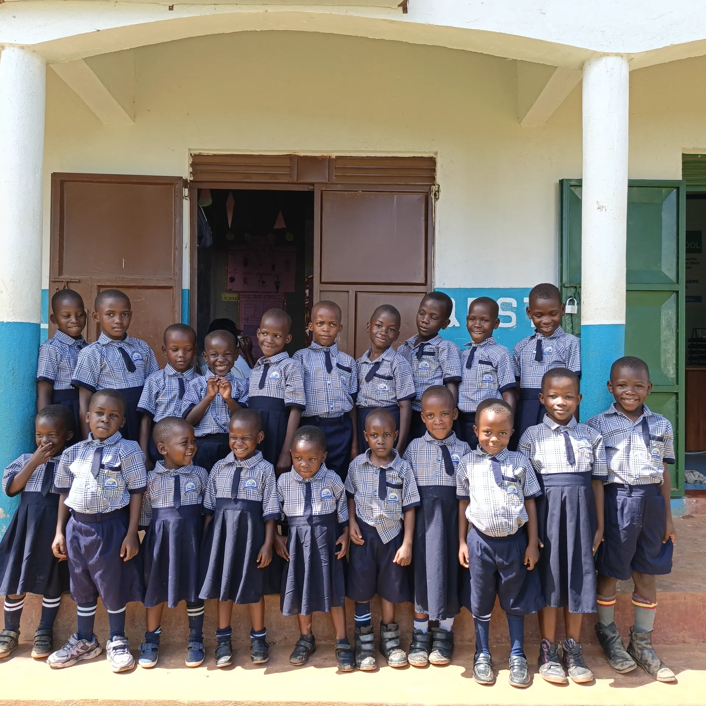
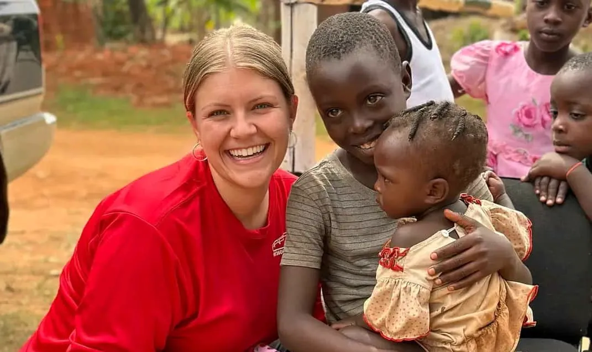
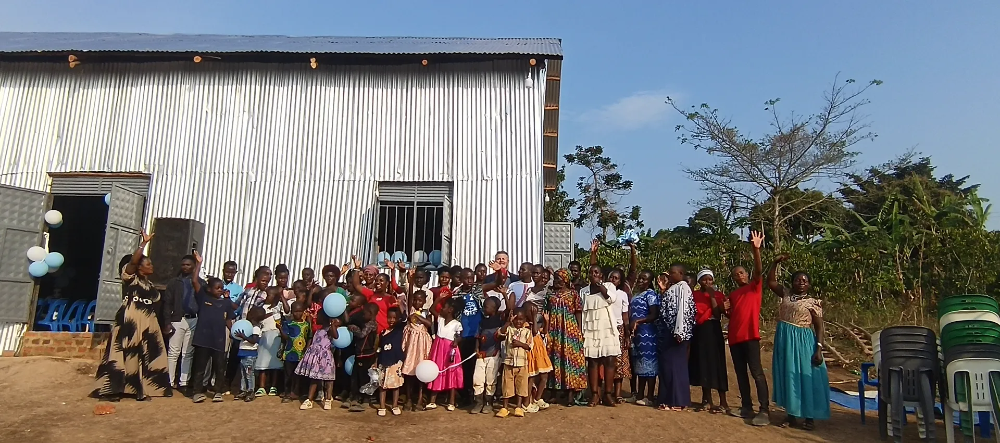
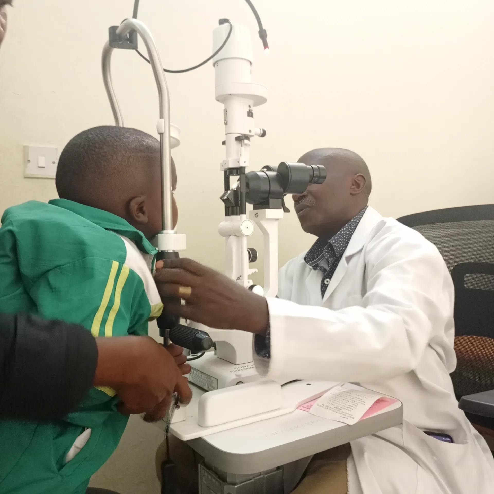
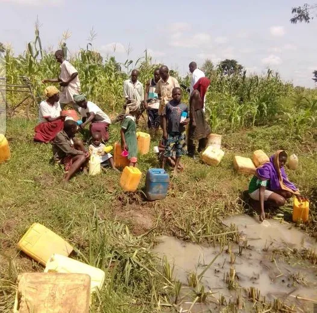

Every child deserves a loving home and a bright future.
We connect compassionate donors with orphans to provide education, healthcare, and safe shelter. Join us in making a lasting impact.


Join 5k+ supporters this month.


Recent Donors

5,890
Children Supported



Help us build a new shelter in Nairobi.
Our Mission
To provide comprehensive care—encompassing education, protection, and healthcare—to vulnerable children, empowering them to overcome their disadvantaged backgrounds and lead self-sustaining, developmental lives.
Our Vision
We envision a world where every child and young person is empowered to be a responsible, active member of society, free from violence, disease, and poverty.
Our Core Values
About His Grace Orphans Ministry
We believe in providing education, protection, sustenance, medical care, emotional support, and spiritual guidance to orphans and poor children in our community and outlaying areas of Uganda.
Food
38% of kids younger than 5 experience nourishment hardship.
Clothing
38% of the populace is beneath the global destitution line of $1.25 each day.
Shelter
2/3 live in unsatisfactory lodging with a typical pay of $65 every month.

Who We Are?
By his stripes we are healed join us and we support our loving Children widows and Orphans are our concerns. Make your donation to this organization for the glory of God.
About Our Non-Profit
Every child– person deserves safety, comfort, food, clothes, and shelter. Our mission is to improve the quality of life of OVC through education, Psychosocial and spiritual support for a better tomorrow.
How Can I Help?
Our Short History & Story

Imagine If Your Child Didn’t Have Clean Water
Water is still a big problem for us we need a clean water source and need funds to dig a water well so that we can have clean water pray for us as we work in hand to set up a clear water source for our children and the community.
While it’s tough to even fathom that people don’t have clean drinking water. It’s easy for us to pretend that this isn’t happening as we sit in our comfortable homes with water on demand. But it’s a reality for the people in Uganda.
Every day they struggle with the very basic necessities that most of us take for granted. Poor water quality is a widespread problem, particularly in developing countries. A recent UN agency report indicated that almost one-third of people in developing countries do not have access to clean drinking water. It has been estimated that over 80 percent of diseases in these countries are related to poor water quality.
Your small donation can help provide basic necessities to these poor, tired, and hungry individuals!
Financial Integrity & Transparency
We believe that every donor deserves to know exactly how their contribution is making a difference. We maintain a 100% transparency policy for all funds received.
Fund Allocation Breakdown
Direct Child Programs
Covers tuition, school materials, daily meals, medical checkups, and housing for our orphans.
Essential Administration
10%Staffing, logistical support, and ensuring safe transport for children and resources.
Growth & Fundraising
5%Events and outreach programs to expand our community of supporters.